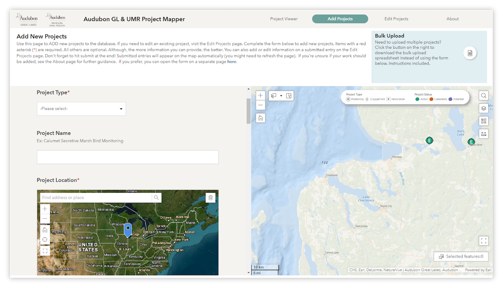
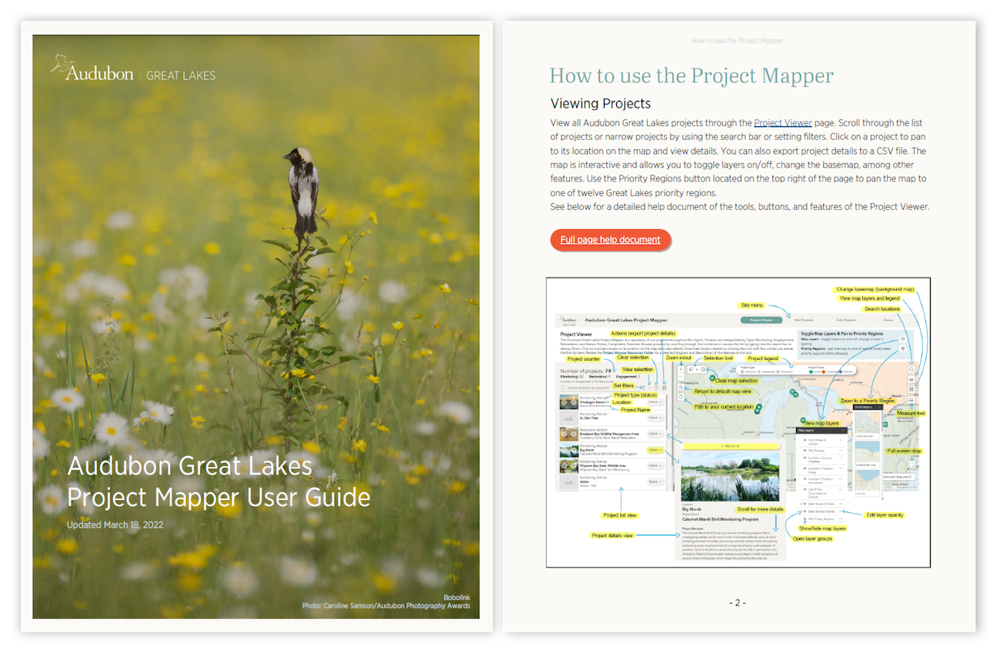

An internal tool that serves as a project directory used by Audubon Great Lakes staff from all departments to share, edit, and view high-level summaries of potential, current, and completed projects across the Great Lakes region. The Project Mapper has increased staff ability to track, summarize, and plan future conservation, engagement, policy, and restoration work.
It is an interactive, GIS-based web application that houses details for hundreds of project site locations, including the project status, type, staff primary contact, partners, funders, and more. Staff are able to upload and edit project details through embedded Survey123 forms.
I held staff trainings and created a user guide to ensure all users—wether they were uploading and editing projects or just browsing—felt comfortable using the app.
Given that this is an internal tool housing sensitive data, only screenshots are provided and some details have been blurred.
Project Mapper main page, showing the interactive map (zoomed in for privacy) and list of projects (blurred for privacy).
Add Projects page with the embedded Survey123 form used to enter new projects.
Two pages from the Project Mapper user guide.